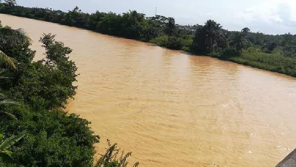

PHYTO is a smart environmental monitoring and remediation support system that demonstrates how polluted water from illegal mining areas can be treated using a combination of filtration, monitoring sensors, and phytoremediation principles based on scientific research.
Illegal mining continues to pollute rivers, destroy ecosystems, and threaten public health across Ghana.
Heavy metals and chemicals contaminate rivers and destroy aquatic life.
Unsafe water increases disease risk in surrounding communities.
Polluted water reduces crop yield and soil fertility.
Mining destroys habitats and reduces biodiversity.

PHYTO combines environmental sensing and nature-based restoration to rebuild damaged ecosystems.
PHYTO is designed based on established scientific research in environmental engineering, phytoremediation, and water quality monitoring systems.
Scientific studies show that certain plants can absorb, stabilize, or remove heavy metals such as lead, mercury, and arsenic from contaminated soil and water over time.
Research on illegal mining (galamsey) in Ghana highlights severe contamination of rivers with sediments and toxic heavy metals affecting ecosystems and communities.
Modern environmental systems use IoT sensors (pH, turbidity, and chemical sensors) to continuously monitor water quality in real time for early detection of pollution.
Global environmental research supports combining natural systems (plants) with engineering solutions to create sustainable and low-cost water treatment systems.
PHYTO is currently a prototype system built on scientific literature and engineering design principles. It demonstrates how phytoremediation and IoT systems can work together, but has not yet been deployed in large-scale real-world testing.
This section explains how PHYTO would be deployed in real Ghanaian galamsey-affected environments if scaled beyond prototype stage.
Rivers and land areas heavily affected by illegal mining are identified through environmental surveys and government collaboration.
Solar-powered stations, sensors, pumps, and filtration units are installed at strategic points along polluted water sources.
Initial pH and turbidity readings are taken to establish pollution levels before treatment begins.
The system continuously pumps, filters, and monitors water while phytoremediation plants gradually absorb heavy metals.
Data from sensors is used to track improvement in water quality over time and guide environmental decision-making.
A simplified visual representation of how all PHYTO components are connected.
PHYTO is an IoT-based environmental restoration system that protects reclaimed mining areas, filters polluted water, and restores ecosystems using natural phytoremediation processes.
A simulated polluted mining environment representing environmental destruction caused by illegal mining. It produces the contaminated water for treatment.
Provides renewable energy to power pumps, sensors, LCD screens, and the entire monitoring and security system.
Uses PIR motion sensors and LDR laser tripwires to detect intrusion. A buzzer and LCD display trigger real-time alerts.
Transfers polluted water from the galamsey site to the filtration station using solar-powered pumping.
Removes sediments and physical impurities from polluted water before biological treatment.
Uses plants that naturally absorb heavy metals and toxins from water after filtration.
Uses pH and turbidity sensors with 16x2 LCD displays to monitor water quality before and after treatment.
Polluted water is collected from the degraded site
Solar-powered pump sends water to filtration station
Filtration removes sediments and debris
Plants absorb heavy metals in phytoremediation chamber
Sensors monitor water quality (pH & turbidity)
Security system protects reclaimed site
A future version will include an AI-powered drone to detect illegal mining activities using aerial monitoring and computer vision.
How data, water, and protection move through the PHYTO system.
Innovators and designers behind Eco-Restoration
Team Member
Team Member
Team Member
Project Mentor
Project Mentor